<title>Monsters of the Gates</title>
<meta name="claude:viewport-fit-sides" content="cover">
<link rel="stylesheet" href="https://fonts.googleapis.com/css2?family=Atkinson+Hyperlegible:ital,wght@0,400;0,700;1,400&family=Young+Serif&display=swap">
<style>
/* Layout: one reading column with wide picture plates that break out of it; decisions gathered at the end as a form. */
:root {
  --bg: #12162a; --bg2: #1a1f38; --line: #2c3352; --fg: #e6e4dc; --dim: #a5a8bb;
  --bronze: #d9a94e; --cold: #9ad8ff; --plate: #0e1122; --plate-fg: #c9ccdb; --warn: #e58a6a; --pick-bg: #1c2b3d;
  --display: "Young Serif", Georgia, "Times New Roman", serif;
  --body: "Atkinson Hyperlegible", "Segoe UI", system-ui, sans-serif;
  color-scheme: dark;
}
@media (prefers-color-scheme: light) { :root:not([data-theme="dark"]) {
  --bg: #f3f1ea; --bg2: #e8e5db; --line: #cfcabb; --fg: #1d2030; --dim: #5a5d70;
  --bronze: #8a5d10; --cold: #1f6d9c; --warn: #a8472a; --pick-bg: #dfeaf2; color-scheme: light } }
:root[data-theme="light"] {
  --bg: #f3f1ea; --bg2: #e8e5db; --line: #cfcabb; --fg: #1d2030; --dim: #5a5d70;
  --bronze: #8a5d10; --cold: #1f6d9c; --warn: #a8472a; --pick-bg: #dfeaf2; color-scheme: light }
body { background: var(--bg); color: var(--fg); font: 17px/1.55 var(--body); padding-block: 28px 80px;
  padding-left: max(16px, env(safe-area-inset-left, 0px)); padding-right: max(16px, env(safe-area-inset-right, 0px)); }
main { max-width: 1080px; margin: 0 auto; display: flex; flex-direction: column; gap: 56px; }
section { display: flex; flex-direction: column; gap: 18px; }
.col { max-width: 68ch; display: flex; flex-direction: column; gap: 14px; }
h1, h2, h3 { font-family: var(--display); font-weight: 400; text-wrap: balance; margin: 0; line-height: 1.15; }
h1 { font-size: clamp(2.2rem, 6vw, 3.6rem); }
h2 { font-size: clamp(1.5rem, 3.4vw, 2.1rem); }
h3 { font-size: 1.25rem; }
p { margin: 0; }
.kicker { font-size: .8rem; letter-spacing: .14em; text-transform: uppercase; color: var(--bronze); }
.lede { font-size: 1.2rem; color: var(--fg); max-width: 62ch; }
.dim { color: var(--dim); }
strong { color: var(--fg); }
.status { border: 1px solid var(--line); border-left: 4px solid var(--cold); padding: 12px 16px; max-width: 68ch; background: var(--bg2); }
figure { margin: 0; background: var(--plate); border: 1px solid var(--line); }
figure img { display: block; width: 100%; height: auto; }
figcaption { color: var(--plate-fg); font-size: .9rem; padding: 10px 14px; border-top: 1px solid #23284a; }
.pair { display: grid; grid-template-columns: repeat(auto-fit, minmax(280px, 1fr)); gap: 14px; }
.pix img { image-rendering: pixelated; }
.facts { display: grid; grid-template-columns: repeat(auto-fit, minmax(170px, 1fr)); gap: 0; border-top: 1px solid var(--line); border-bottom: 1px solid var(--line); }
.facts div { padding: 14px 16px 14px 0; }
.facts b { display: block; font-family: var(--display); font-weight: 400; font-size: 2.2rem; line-height: 1; color: var(--bronze); font-variant-numeric: tabular-nums; }
.facts span { color: var(--dim); font-size: .95rem; }
.wrap { overflow-x: auto; }
table { border-collapse: collapse; width: 100%; font-size: .95rem; }
th, td { text-align: left; vertical-align: top; padding: 9px 12px 9px 0; border-bottom: 1px solid var(--line); }
th { color: var(--dim); font-weight: 400; font-size: .8rem; letter-spacing: .08em; text-transform: uppercase; }
td.num { font-variant-numeric: tabular-nums; white-space: nowrap; }
.mine { color: var(--cold); font-weight: 700; }
.monster { display: grid; grid-template-columns: minmax(0, 1fr); gap: 12px; padding-top: 22px; border-top: 1px solid var(--line); }
.monster .was { color: var(--dim); font-size: .95rem; }
.monster .then { border-left: 3px solid var(--bronze); padding-left: 12px; max-width: 66ch; }
ol.rules { margin: 0; padding-left: 1.2em; display: flex; flex-direction: column; gap: 10px; max-width: 70ch; }
details { border-top: 1px solid var(--line); padding: 10px 0; }
details summary { cursor: pointer; font-family: var(--display); font-size: 1.1rem; }
details summary:focus-visible, button:focus-visible, input:focus-visible { outline: 2px solid var(--cold); outline-offset: 3px; }
details .room { color: var(--dim); font-size: .95rem; margin: 6px 0 4px; max-width: 80ch; }
.q { border-top: 1px solid var(--line); padding: 18px 0 4px; display: flex; flex-direction: column; gap: 8px; }
.q legend, .q h3 { font-family: var(--display); font-size: 1.15rem; padding: 0; }
fieldset { border: 0; margin: 0; padding: 0; min-width: 0; display: flex; flex-direction: column; gap: 6px; }
label.opt { display: flex; gap: 10px; align-items: flex-start; padding: 8px 10px; border: 1px solid var(--line); cursor: pointer; }
label.opt:has(input:checked) { background: var(--pick-bg); border-color: var(--cold); }
label.opt input { margin-top: .35em; accent-color: var(--cold); flex: none; }
label.opt span { min-width: 0; }
.tag { font-size: .72rem; letter-spacing: .1em; text-transform: uppercase; color: var(--cold); border: 1px solid var(--cold); padding: 1px 6px; margin-left: 6px; white-space: nowrap; }
.send { display: flex; flex-wrap: wrap; gap: 12px; align-items: center; }
button { font: inherit; color: var(--bg); background: var(--bronze); border: 0; padding: 10px 18px; cursor: pointer; }
textarea { width: 100%; min-height: 9.5em; font: .95rem/1.45 var(--body); color: var(--fg); background: var(--bg2); border: 1px solid var(--line); padding: 10px; box-sizing: border-box; }
.note { color: var(--warn); }
</style>

<main>
<header class="col">
  <p class="kicker">AWAKEN · a plan for your yes or no · 10 November 2026</p>
  <h1>Monsters of the Gates</h1>
  <p class="lede">You said the things you fight in a gate are just normal Minecraft mobs. You're right. This is how I'd give every gate its own monsters, each one a thing you know by its shape and have to fight in its own way.</p>
  <p class="status"><strong>Nothing has been built.</strong> The mod is unchanged. The five monsters drawn below are an afternoon's first pass, made with the mod's own model tools so you can see the direction. There are ten decisions at the bottom, each with my pick already chosen.</p>
</header>

<section>
  <div class="col">
    <p class="kicker">The short answer</p>
    <h2>Yes, make them. One theme first, and only go on if you like it.</h2>
    <p>Gate monsters should be their own creatures, separate from the overworld's animals, built on the same model and animation system the Drip Lurker uses. That system already does everything they need, so almost no new engine work is wanted.</p>
    <p>I would not build 78 in one go. I'd build the Bell Crypt's five to the Drip Lurker's standard, show you clips filmed close up, and stop. If they pass, the rest come a rank at a time, in the order players meet them.</p>
  </div>
  <div class="facts">
    <div><b>79</b><span>gate monsters still wear a Minecraft body</span></div>
    <div><b>33</b><span>of them are people: zombies, skeletons, illagers, endermen</span></div>
    <div><b>23</b><span>boxes in the Drip Lurker, the one you said looks incredible</span></div>
    <div><b>1½ h</b><span>to make one monster to that standard, at the pace this game is really built</span></div>
  </div>
  <p class="col dim">One thing I was told that turned out wrong: that 95 of 100 gate monsters are vanilla. All 15 Lords and the six Provings already have bodies of their own from the boss work. The 79 that don't are the normal monsters, the elites and the Wardens, which are the ones you spend a run fighting.</p>
</section>

<section>
  <div class="col">
    <p class="kicker">What you see today</p>
    <h2>The dungeon is ours. The thing ringing the bell is a zombie.</h2>
    <p>These are real shots of the run as it plays now. I looked at them for why the monsters read as vanilla, and found five reasons.</p>
  </div>
  <div class="pair">
    <figure>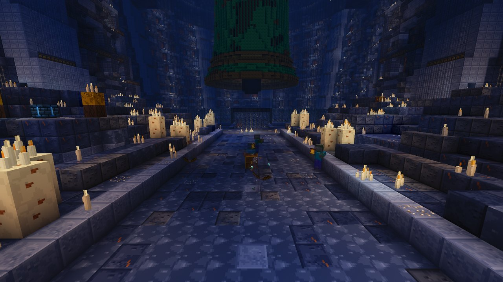<figcaption>The Hour Crypt's nave. The room is huge and built by us. The Toll Ghouls on the floor are small, blue-grey on blue-grey stone.</figcaption></figure>
    <figure class="pix">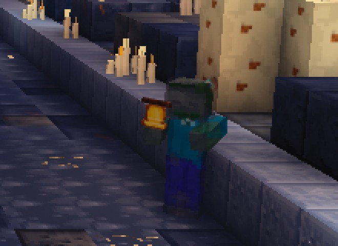<figcaption>The same shot, enlarged. A Minecraft zombie, tinted, holding a bell.</figcaption></figure>
  </div>
  <div class="pair">
    <figure class="pix">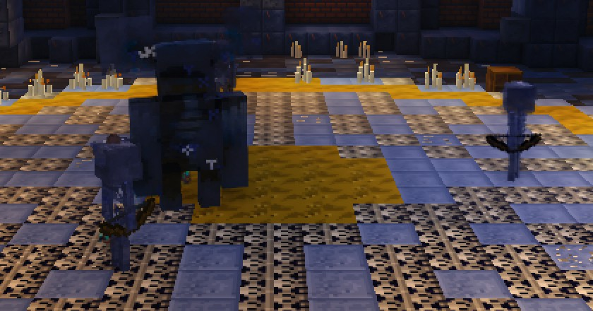<figcaption>The crypt's Warden and its company: Minecraft's Warden, nearly black on a dark floor, with two skeletons.</figcaption></figure>
    <figure class="pix">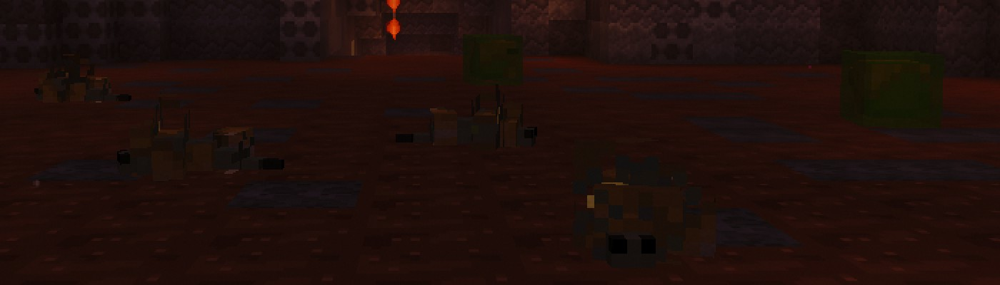<figcaption>The Broodwarren's first room: green slimes and silverfish under our lanterns.</figcaption></figure>
  </div>
  <ol class="rules">
    <li><strong>The outline is Minecraft's.</strong> A tint and a glow change the surface. From across a room you read shape first, and the shape is a zombie's.</li>
    <li><strong>The walk is Minecraft's</strong>, the one you've watched for years.</li>
    <li><strong>Every fight is the same fight.</strong> All 79 share one rule: walk up, stop, wind up, swing. What differs is a ring of dust on the floor.</li>
    <li><strong>They are small and dark in rooms built to be huge and dark.</strong></li>
    <li><strong>Their voices are borrowed</strong> from the mob whose body they wear.</li>
  </ol>
  <figure>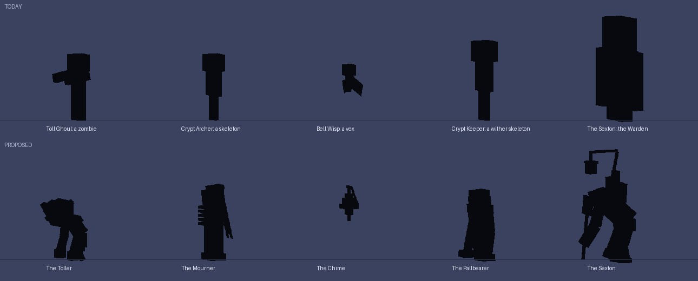<figcaption>Shape first. Top row: the Bell Crypt's five as they are, four of them an upright block on two legs. Bottom row: the five proposed here, at the same scale.</figcaption></figure>
</section>

<section>
  <div class="col">
    <p class="kicker">The bar</p>
    <h2>Why the Drip Lurker works with 23 boxes</h2>
    <p>I read how it's made, to find what the standard really is. Detail isn't it. Four things are, and every monster in this plan is held to them:</p>
  </div>
  <ol class="rules">
    <li><strong>One idea you can say in a line.</strong> A stalactite that walks.</li>
    <li><strong>An outline nothing else has.</strong></li>
    <li><strong>Feet that plant, and a body that rides them.</strong> The game already does this for any body with legs.</li>
    <li><strong>Moves the body acts out.</strong> It rears its front legs before it lunges. It dies curling up one leg at a time.</li>
  </ol>
  <div class="col">
    <h3>So the rule I'd design by</h3>
    <p><strong>A gate monster is a thing that belongs to that place and nowhere else, that you know by its outline, and that makes you do one thing differently.</strong></p>
    <p>The biggest change this brings: gate monsters stop being people in costume. A person-shape in Minecraft is a zombie whatever it wears, and a human is the hardest thing to animate well. So the crypt's bell-ringer becomes a creature whose head is its bell.</p>
    <p>Each theme's monsters are painted against their room, so they stand out of it: warm bronze and bone in the blue crypt. Each carries one light, and that light is where you look and often where you hit.</p>
  </div>
</section>

<section>
  <div class="col">
    <p class="kicker">The proposal, drawn</p>
    <h2>The Bell Crypt's five</h2>
    <p>These are real models, made with the same tool that made the Drip Lurker and drawn by its preview renderer. They are a first pass: no animation yet, not seen in the game's own light. They show the shapes and how each one fights. Whether they move well is what the proof is for.</p>
  </div>
  <figure>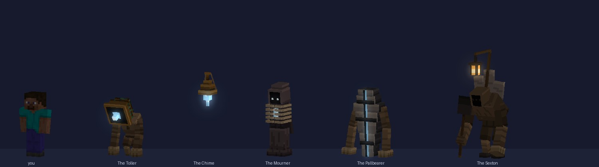<figcaption>The company, in candle light, with you for size. Left to right: the Toller, the Chime, the Mourner, the Pallbearer, the Sexton.</figcaption></figure>

  <div class="monster">
    <h3>The Toller <span class="was">· today the Toll Ghoul, a zombie holding a bell</span></h3>
    <p class="col">A hunched ringer whose head is its bell, with a cold flame where the clapper should hang. It walks on its knuckles.</p>
    <figure>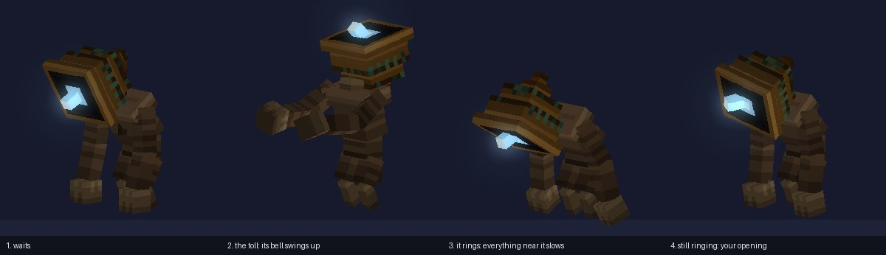<figcaption>Its fight, pose by pose.</figcaption></figure>
    <p class="then"><strong>What you do differently:</strong> its bell swings up before it tolls. Hit it then and the toll is lost and it reels. Miss the moment and everything near it slows, you included.</p>
  </div>

  <div class="monster">
    <h3>The Mourner <span class="was">· today the Crypt Archer, a skeleton with a bow</span></h3>
    <p class="col">A tall veiled column with no arms. Its ribs lie shut across its front.</p>
    <figure>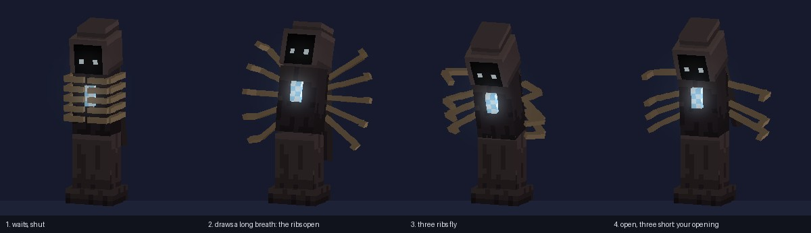<figcaption>It draws a long breath, the ribs open, and three of them fly.</figcaption></figure>
    <p class="then"><strong>What you do differently:</strong> while it's open it can't turn, and its heart shows. You can count the ribs it has left, so you know when it can't shoot.</p>
  </div>

  <div class="monster">
    <h3>The Chime <span class="was">· today the Bell Wisp, a vex</span></h3>
    <p class="col">A hand-bell that flies, with the wisp burning in its mouth. They come three or four at a time.</p>
    <figure>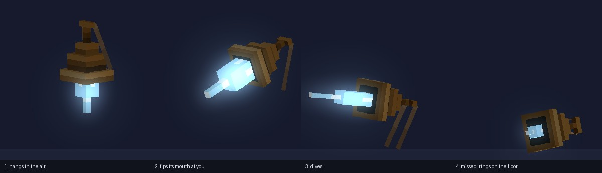<figcaption>It tips its mouth at you before it dives.</figcaption></figure>
    <p class="then"><strong>What you do differently:</strong> step aside. A dive that misses leaves it ringing on the floor, and that's when you hit it.</p>
  </div>

  <div class="monster">
    <h3>The Pallbearer <span class="was">· today the Crypt Keeper, a wither skeleton</span></h3>
    <p class="col">The crypt's elite. A stone coffin that walks on two long arms, cold light leaking from the seam of its lid.</p>
    <figure>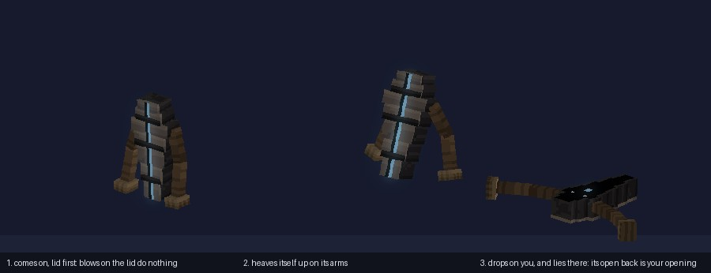<figcaption>It heaves itself up on its arms and drops on you.</figcaption></figure>
    <p class="then"><strong>What you do differently:</strong> blows on the lid do nothing, so stop swinging at its front. Get it to drop, step out, and strike the open back while it lies there.</p>
  </div>

  <div class="monster">
    <h3>The Sexton <span class="was">· today Minecraft's Warden with a tint</span></h3>
    <p class="col">The crypt's Warden. A gravedigger bent double under the headstones it carries, with no eyes under its hood and a lantern swinging on a pole in front of it. Its lantern is the one warm light among the monsters.</p>
    <figure>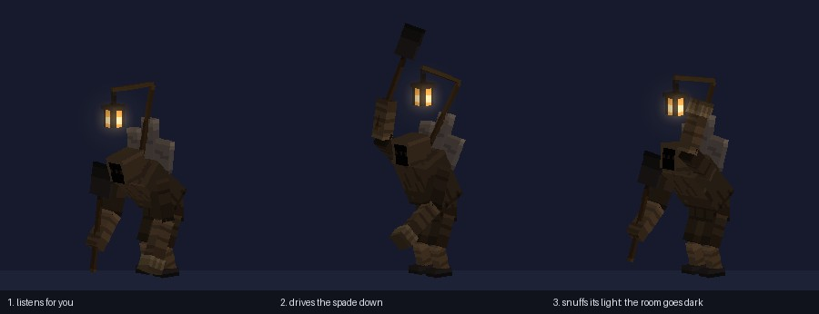<figcaption>It hunts by sound.</figcaption></figure>
    <p class="then"><strong>What you do differently:</strong> when it reaches up and snuffs the lantern, the room goes dark and its spade comes down where it last heard you. Move quietly, or be somewhere else.</p>
  </div>
</section>

<section>
  <div class="col">
    <p class="kicker">Three ways to do it</p>
    <h2>How much to build</h2>
    <p>Times are measured from this project's own history, not guessed at a human pace. Forty bosses were made in thirty hours. The three Amber Reach creatures took sixteen minutes each. What takes the time is looking at each one properly, close up, before you do.</p>
  </div>
  <div class="wrap"><table>
    <tr><th></th><th>A. A few families, many paints</th><th class="mine">B. A body for each, in stages (my pick)</th><th>C. Elites and Wardens only</th></tr>
    <tr><td>What gets built</td><td>Six skeletons animated once, then 78 paint jobs on them</td><td>78 bodies, each with its own shape, stance, walk and moves</td><td>30 bodies. The 49 normal monsters stay as they are</td></tr>
    <tr><td>Builder time</td><td class="num">about 30 hours</td><td class="num">90 to 120 hours</td><td class="num">35 to 45 hours</td></tr>
    <tr><td>What you'd see</td><td>Six monsters in fifteen costumes</td><td>A different company in every theme</td><td>The packs you fight for most of a run are still zombies and skeletons</td></tr>
    <tr><td>What could go wrong</td><td>Your own rule: every creature should move like itself. Today's 79 already share 39 bodies and feel the same. Six would feel more so</td><td>It's a lot. Things built fast and never looked at have been rejected before</td><td>It doesn't fix what you said</td></tr>
  </table></div>
  <div class="col">
    <p><strong>I'd pick B, and take the good half of A.</strong> The feet, the checks, the filming scripts and a starting point for each kind of skeleton are shared, and that part is already built. Each monster still gets its own boxes, its own way of standing and its own moves.</p>
    <p>I was asked to test the idea of animating six families once and dressing them per theme. It's half right. The families save engine work, which is done. They don't save the part that makes a creature its own, and using them to skip that part is option A.</p>
    <p class="dim">What would change my mind: if the Bell Crypt's five take much longer than a day and a half, or don't pass after two rounds, 78 is too many. Then I'd do C, with a small set of normal monsters shared between neighbouring themes.</p>
  </div>
</section>

<section>
  <div class="col">
    <p class="kicker">Fighting them</p>
    <h2>Six small rules, so each one is its own problem</h2>
    <p>None of these is special code for one monster. Each is a setting, decided on the server so it's the same for everyone in the gate. Each is shown three ways at once: by the body, by a sound and by a mark on the ground.</p>
  </div>
  <div class="wrap"><table>
    <tr><th>Rule</th><th>What it means</th><th>Who has it first</th></tr>
    <tr><td><strong>An opening</strong></td><td>After a big move it can't turn or strike for a moment, and your blows count double toward breaking its stance</td><td>every monster with a big move</td></tr>
    <tr><td><strong>Stopped by a blow</strong></td><td>Hit it while it winds up and the move is lost</td><td>the Toller</td></tr>
    <tr><td><strong>A front that holds</strong></td><td>Blows from the front do nothing. Get round it, or bait the move that turns it over</td><td>the Pallbearer</td></tr>
    <tr><td><strong>Planted to shoot</strong></td><td>It can't turn while it draws, and what it shoots is part of its body, so you see how much is left</td><td>the Mourner</td></tr>
    <tr><td><strong>A miss costs it</strong></td><td>A dive or a charge that misses leaves it stuck where it lands</td><td>the Chime</td></tr>
    <tr><td><strong>Looks like the room</strong></td><td>It waits as scenery, and only its one light gives it away</td><td>the lurkers already do this</td></tr>
  </table></div>
  <p class="col">In a pack, each one has one job: one slows you, one shoots, one dives, one holds the door. The order you kill them in starts to matter.</p>
</section>

<section>
  <div class="col">
    <p class="kicker">The proof</p>
    <h2>What you'd be shown before anything else is built</h2>
    <p>The Bell Crypt first. It has the two most recognisable Minecraft mobs there are, so the change is plainest. The Hour Crypt is one of your two bar gates. And its five are the hard cases: something upright, a shooter, a flier, a heavy, a giant. The Hive would be safer, because crawlers are what the game already walks best, but a proof should test the risky part.</p>
  </div>
  <ol class="rules">
    <li><strong>Each of the five, filmed close, at leg height,</strong> beside the mob it replaces: a walk, a run, a stop, a turn on the spot, ten seconds standing.</li>
    <li><strong>Each one's fight</strong> against a standing target: the tell, the strike, the opening, then a blow and its death.</li>
    <li><strong>The pack in the Hour Crypt's nave,</strong> in the nave's own light, from 8 blocks and from 20.</li>
    <li><strong>The five as black outlines</strong> beside today's.</li>
  </ol>
  <p class="col">You'd get side-by-side clips at game speed, and I'd say plainly what's still weak. You wouldn't be asked to play a gate. You say the five pass, or say what's wrong and there's one more round. If two rounds fail, the plan falls back to elites and Wardens only.</p>
  <div class="wrap"><table>
    <tr><th>Stage</th><th>Themes</th><th>Bodies</th><th>Builder time</th><th>Then</th></tr>
    <tr><td>0, the proof</td><td>Bell Crypt, and the shared parts</td><td class="num">5</td><td class="num">a day and a half</td><td>stops for you</td></tr>
    <tr><td>1</td><td>The rest of rank E: Hive, Fungal Hollow, Ember Mines, Overgrown Temple</td><td class="num">22</td><td class="num">four days</td><td>stops for you</td></tr>
    <tr><td>2</td><td>Rank D: Drowned Archive, Clockwork Foundry, Glass Desert, Lantern Night Market</td><td class="num">21</td><td class="num">four days</td><td>stops for you</td></tr>
    <tr><td>3</td><td>Rank C: Frost Monastery, Mirror Palace, Precursor Lab, Nightmare</td><td class="num">20</td><td class="num">four days</td><td>stops for you</td></tr>
    <tr><td>4</td><td>Ranks B and A: Sky Archipelago, Abyssal Shrine</td><td class="num">10</td><td class="num">two days</td><td>done</td></tr>
  </table></div>
  <p class="col dim">The times assume an hour and a half a monster and a second paint pass on one in three. They are the least certain numbers on this page. Any stop can be the last one.</p>
</section>

<section>
  <div class="col">
    <p class="kicker">The whole roster</p>
    <h2>All fifteen themes, one line each</h2>
    <p>Every monster that needs a body, with a first design. Bold on purpose: one idea each, an outline you could cut out of black paper. Open a theme to read it.</p>
  </div>
  <div id="roster"></div>
</section>

<section>
  <div class="col">
    <p class="kicker">What stays as it is</p>
    <h2>Left alone, and still unknown</h2>
  </div>
  <ol class="rules">
    <li><strong>Overworld animals and the levelled overworld mobs.</strong> Gate monsters are their own species. Nothing from outside is reused inside.</li>
    <li><strong>The Lords and the Provings.</strong> They have their own bodies and their own fights already.</li>
    <li><strong>The run:</strong> packs, dungeons, traps and pay are untouched. Monster ids stay the same, so saves, loot and the Journal keep working and only the name and the body change.</li>
    <li><strong>The old bodies</strong> stay in the game as a silent fallback. If a new body ever fails to load, you see the old one, and one theme can be turned back on its own.</li>
  </ol>
  <div class="col">
    <p class="note">What I don't know yet:</p>
    <p>Whether the prototypes move as well as they stand. Stills are flattering, and that has caught us before. What a full pack of new bodies costs in frames on your Mac: the rule is 110 in a full gate fight, and it gets measured on the Mac at the proof, before any merge. And whether the voices are right, because sounds picked on paper have been wrong before.</p>
  </div>
</section>

<section>
  <div class="col">
    <p class="kicker">Your call</p>
    <h2>Ten decisions</h2>
    <p>My pick is already chosen on each. Change any you disagree with, then copy your answers and paste them to me. Or just say "go with all your picks".</p>
  </div>
  <form id="dec"></form>
  <div class="send">
    <button type="button" id="copy">Copy my answers</button>
    <span id="copied" class="dim" role="status"></span>
  </div>
  <textarea id="out" readonly aria-label="Your answers, ready to paste"></textarea>
</section>
</main>

<script>
const ROSTER = [
 ["Rank E", [
  ["Bell Crypt", "Dark blue stone and warm candles, so its monsters are bronze, bone and old cloth. Their light is a cold blue flame. Drawn above.", [
   ["Toll Ghoul, a zombie","The Toller","A hunched ringer whose head is its bell, a cold flame where the clapper hangs.","Strike the bell as it swings up and the toll is lost."],
   ["Crypt Archer, a skeleton","The Mourner","A tall veiled column with no arms, its ribs shut across its front.","The ribs open like wings before three fly. Open, it can't turn."],
   ["Bell Wisp, a vex","The Chime","A hand-bell that flies, the wisp burning in its mouth.","Step aside from the dive and it lies ringing on the floor."],
   ["Crypt Keeper, a wither skeleton","The Pallbearer","A stone coffin that walks on two long arms.","Its lid shrugs off blows. It drops on you, then lies with its open back up."],
   ["The Sexton, the Warden","The Sexton","Bent double under headstones, eyeless, a lantern on a pole in front of it.","It hunts by sound. It snuffs the lantern and the room goes dark."]]],
  ["Hive", "Dark red-brown paper and comb in orange light, so its monsters are pale wax and black chitin, with honey gold lit inside them.", [
   ["Hive Drone, a bee","The Stinger","Hardly a body at all: one long barbed sting hung under four narrow wings.","Block the dive and the sting snaps off. After that it can only bump you."],
   ["Hive Larva, a silverfish","The Grub","A fat pale grub that humps along like an inchworm, its gut glowing through its skin.","It arches right up before it jumps."],
   ["Honey Slime, a slime","The Honeypot","A small black ant under a swollen amber belly it carries over its head like a lamp.","Burst the belly from behind and it leaves a sticky pool that slows monsters too."],
   ["Hive Guard, a spider","The Door","A broad low soldier whose head is a flat six-sided plate the size of the tunnel it plugs.","Its face stops every blow from the front. Get beside it when it lunges."],
   ["The Swarm Mind, a phantom","The Swarm Mind","A paper nest carried through the air by a ring of drones.","Kill the carriers on one side and it tips and sinks to where you can reach it."]]],
  ["Fungal Hollow", "Dark, lit purple and yellow by its own mushrooms, so its monsters are pale cream and white, with spore gold in their gills.", [
   ["Sporeling, a small slime","The Sporeling","A puffball cap that runs on three root-toes.","It swells before it pounces. Kill it at arm's length: it bursts."],
   ["Mycelid Shambler, a zombie","The Shelf","A walking stack of bracket fungus with no head, one long root of an arm dragging.","The shelves lift like gills before it coughs. Strike the soft underside after."],
   ["Capweaver, a cave spider","The Capweaver","A wide flat toadstool cap on eight thread legs. From above it's just another mushroom.","It lifts its rim to spit web, and that's when it can be hurt."],
   ["Puffcap, a creeper","The Puffcap","A thin stalk on root feet under a cap that balloons as it comes.","Hit it while it swells and it bursts where it stands."],
   ["Hollow Tender, a witch","The Tender","A tall thin stalk under a cap as wide as a parasol.","It roots itself to heal the others and can't move while rooted."],
   ["The Rot, a ravager","The Rot","A fallen log that got up: a hollow trunk on six root legs.","It charges hollow end first. Make it hit a wall and it sticks."]]],
  ["Ember Mines", "Black coal and orange fire, so its monsters are pale ash and iron, with an ember inside behind a grate.", [
   ["Cinder Miner, a husk","The Pickhead","A hunched beast carrying a hod of coal, its head an iron pick on a long neck.","It rears and pecks the floor. The pick sticks."],
   ["Slag Cube, a magma cube","The Slag Pot","An iron crucible on three stub legs, slag slopping as it hops.","It lands in a ring of fire and is empty and dark for a breath."],
   ["Ember Imp, a blaze","The Bellows","A forge bellows that flies, nozzle first.","It swells before each burst and hangs slack after."],
   ["Scorch Crawler, a silverfish","The Coal Tick","A lump of coal on six needle legs.","In the seam it's a lump of coal until two embers open."],
   ["Slag Boar, a hoglin","The Slag Boar","A boar whose back is a furnace grate, fire behind iron ribs.","After a charge the grate vents and dims."],
   ["The Overseer, a wither skeleton","The Overseer","A brick chimney that walks on iron legs, with two pokers for arms.","The furnace door in its chest is the only place a blow counts."]]],
  ["Overgrown Temple", "Green stone and leaves in gold light, so its monsters are grey carved stone and dark root, with green in the cracks.", [
   ["Vine Creaker, a creaking","The Creaker","A broken statue carried about on the roots that broke it, like a crab in a shell.","Watched, it's a statue kneeling. It only walks while nobody looks."],
   ["Thorn Archer, a bogged","The Thorn Bud","A tall stalk on root feet with a shut bud for a head.","The bud opens like a flower to spit thorns, and stays open a moment."],
   ["Thorn Hound, a wolf","The Bramble Hound","A hound woven of thorn, its ribs a cage with a lit seed inside.","It lies as a bush until it springs. The seed gives it away."],
   ["Incense Priest, an evoker","The Censer","A bronze incense burner hanging from three long stilt legs.","Its smoke heals the others. Knock a leg and it drops the burner."],
   ["The Overgrowth, an iron golem","The Overgrowth","A carved pillar torn loose and stood up, a slab of roof still on its head.","Its roots come up in a ring. Stand close in."]]]]],
 ["Rank D", [
  ["Drowned Archive", "Teal water, wet stone and paper, so its monsters are sodden cream paper and black ink.", [
   ["Ink Drowned, a drowned","The Blotter","A walking heap of drowned books, its head one open book.","The book opens wide before it spits ink."],
   ["Page Wraith, a vex","The Paper Crane","Birds folded from wet pages, all flat planes and creases.","They rustle, then cut in a line."],
   ["Archive Eye, a guardian","The Reading Glass","A brass reading glass that floats, its handle trailing like a tail.","Light gathers in the glass before the beam. It must hold still to read you."],
   ["Salt Stray, a stray","The Quillback","A salt-crusted beast with a back full of quill pens.","It turns its back on you to shoot. That's when to close."],
   ["Drowned Scribe, an evoker","The Scribe","An inkwell that walks on four long pens, leaving a trail of writing.","What it writes in the air becomes a crane. Stop the pen."],
   ["The Curator, an elder guardian","The Curator","A tall cabinet of small drawers drifting on a skirt of loose cards.","Each attack is a drawer sliding open."]]],
  ["Clockwork Foundry", "Dark iron and steam, so its monsters are bright brass and copper.", [
   ["Cog Hound, a wolf","The Cog Hound","A hound built round one great gear, a key in its back.","The key winds before it pounces. After, it stands unwinding."],
   ["Rivet Gunner, a pillager","The Riveter","A rivet gun on three piston legs.","It plants all three feet before a burst and can't turn."],
   ["Spark Drone, a bee","The Governor","Two brass balls on arms spinning round a spindle. It flies by spinning.","A blow stops the spin and it drops."],
   ["Foundry Marshal, a vindicator","The Steam Hammer","A squat body with one arm that is a piston as big as the rest of it.","It vents for a breath after the hammer falls."],
   ["The Regulator, an iron golem","The Regulator","A riveted boiler on four legs with a pressure dial for a face.","The needle climbs as it speeds up. When the valve blows it has nothing left."]]],
  ["Glass Desert", "Pale sand and white sun, so its monsters are dark glass and shadow.", [
   ["Glass Husk, a husk","The Shardwalker","A bundle of long glass blades that walks on its points.","It shatters when it dies. Don't be next to it."],
   ["Sand Stalker, a spider","The Sand Stalker","Flat and wide with sickle jaws. Buried, only the jaws show.","A funnel in the sand is where it will come up."],
   ["Heat Shimmer, a breeze","The Shimmer","Thin glass plates stacked in a twist, almost clear.","You see it best edge-on."],
   ["Prism Sentinel, an enderman","The Prism","A three-sided spire of glass hanging point down, a light climbing inside.","When the light reaches the tip, it fires."],
   ["The Mirage, an illusioner","The Mirage","A traveller's cloak and wide hat with nothing inside.","Only the real one's hat casts a shadow."]]],
  ["Lantern Night Market", "Night and paper lanterns, so its people are paper and lacquer, each with a warm lantern of its own. Most only fight back.", [
   ["Lantern Moth, a phantom","The Lantern Moth","A moth whose body is a lit paper lantern.","Harmless until something hits it."],
   ["Market Pickpocket, a pillager","The Magpie","A long-legged runner with a hooked mask and a sack bigger than it is.","Catch it and the sack spills."],
   ["Wick Slime, a slime","The Hopping Lantern","A round paper lantern that hops on its tassel.","Leave it be and it leaves you be."],
   ["Masked Duelist, a piglin","The Fan Dancer","A tall thing made of folding fans.","Shut, the fans turn any blow. It has to open to lunge."],
   ["The Lamplighter, an enderman","The Lamplighter","A small body on stilts as tall as a house, with a snuffing pole.","It puts the lamps out one by one. Keep it from the last."]]]]],
 ["Rank C", [
  ["Frost Monastery", "White snow and pale stone, so its monsters are dark wool, dark wood and clear ice.", [
   ["Rime Acolyte, a pillager","The Frozen Monk","A kneeling figure in a block of ice that slides at you, one great palm out.","The palm draws back before the shove."],
   ["Hail Stray, a stray","The Hail Slinger","A small thing with one arm twice as long as itself.","The arm whips right round before it throws."],
   ["Frost Wisp, a breeze","The Snow Star","A six-pointed crystal that turns in the air.","Its points fly off as bolts and grow back. Count them."],
   ["Ice Hound, a wolf","The Ice Hound","A lean hound of clear ice, its spine showing through.","It can't stop on its own ice. A missed pounce skids past."],
   ["Chant Master, an evoker","The Long Horn","A temple horn longer than its bearer is tall.","While the horn is up, the bearer under it has no guard."],
   ["The Yeti, a polar bear","The Yeti","Huge in front and small behind, its fur full of icicles and frozen flags.","It rises on its hind legs before the slam."]]],
  ["Mirror Palace", "Silver and white, so its monsters are mirror plate and clear glass with dark edges.", [
   ["Mirror Shade, your own skin","The Mirror Shade","Stays as it is. It wears your face, and that's the point.",""],
   ["Silver Knight, a zombie in armour","The Empty Suit","A suit of mirror plate with nobody in it.","Its shield is a mirror with you in it. Wait for its own swing."],
   ["Glint Mite, an endermite","The Glint","A shard of mirror on six needle legs, thin as a blade edge-on.","Break the mirror it came from."],
   ["Glass Duelist, a skeleton","The Glass Duelist","A fencer of clear glass with one arm far longer than the other.","It can't answer from its short side."],
   ["The Unblinking, an enderman","The Unblinking","A tall standing mirror on clawed feet, one eye filling the glass.","It moves when you look away."]]],
  ["Precursor Lab", "Steel and cold blue light, so its monsters are white sheet, yellow warning paint and bare cable.", [
   ["Test Subject, a zombie","The Test Subject","A shape under a sheet, still strapped to the table it walks on.","It lurches the whole table at you."],
   ["Security Unit, a small iron golem","The Security Unit","A shut steel egg that opens three legs and one lens.","Shut, nothing hurts it. It has to open to see you."],
   ["Coil Unit, a blaze","The Coil","A ring floating over a column, sparks climbing it.","The sparks reach the ring, then it fires."],
   ["Gel Sample, a slime","The Gel Sample","Gel carrying the broken glass of its own tank like a shell.","Kill it and it becomes two, without glass."],
   ["The Sweeper, a ravager","The Sweeper","A floor-cleaning engine as wide as the corridor.","It can't see anything beside it."]]],
  ["Nightmare", "Pink and violet dark with furniture that's too big, so its monsters are bedlinen white and shadow.", [
   ["Sleepwalker, a zombie","The Sheet","A bedsheet over something taller than a person.","It moves only when you blink."],
   ["Night Terror, a phantom","The Night Terror","A mouth with wings and nothing else.","It dives from straight above. You hear it first."],
   ["Many Eyes, a spider","Many Eyes","A low dark heap covered in shut eyelids.","When every eye opens you slow. When they shut, go in."],
   ["The Tall One, an enderman","The Tall One","A long black coat on a stand, taller than the door.","It can't follow where the ceiling is low."],
   ["The Waking, the Warden","The Waking","A giant of rumpled bedclothes with an alarm clock caged in its chest.","Stop the clock and it sleeps for a moment."]]]]],
 ["Ranks B and A", [
  ["Sky Archipelago", "Open sky and white cloud, so its monsters are dark against it: tarred canvas, rope, storm grey.", [
   ["Gale Harpy, a phantom","The Kite","Skin stretched on a diamond of bones, a hooked beak at the point.","It climbs, folds and drops."],
   ["Cloud Breeze, a breeze","The Puffer","A ball of cloud that swells to twice its size.","Small and slow after it blows."],
   ["Sky Raider, a pillager","The Balloonist","A small clawed thing in a basket under a patched balloon.","Burst the balloon and it falls."],
   ["Thunderhead, a ghast","The Thunderhead","A flat-topped block of dark cloud with a bright core.","The core brightens, then lightning lands on the marked ground."],
   ["The Gale, a breeze","The Gale","A turning column of wind with a wreck in it, a ship's wheel at its heart.","The wheel is what you hit."]]],
  ["Abyssal Shrine", "Black and violet with almost no light, so its monsters are a rim of violet round a dark shape.", [
   ["Abyss Watcher, a guardian","The Watcher","A stone lamp-bowl that floats, one lidless eye on a stalk.","The stalk turns to you before the gaze."],
   ["Silent Stalker, an enderman","The Silent One","Long limbs and no outline, a hole in the light.","It makes no sound. The light bends where it stands."],
   ["Void Spawn, an endermite","The Void Spawn","Drops of dark with whip tails, hopping.","Bring light and they thin out."],
   ["Hollow Priest, a wither skeleton","The Hollow Priest","A vestment held open round nothing, a ring of light above it.","The robe opens before it pulls you in."],
   ["The Nothing, the Wither","The Nothing","Three hooded hollows on long necks from one sunken body.","The pull comes when all three look at you together."]]]]]
];
const esc = s => s.replace(/&/g, "&amp;").replace(/</g, "&lt;");
document.getElementById("roster").innerHTML = ROSTER.map(([rank, themes]) =>
  `<h3 style="margin-top:14px">${rank}</h3>` + themes.map(([name, room, rows], i) =>
    `<details${rank === "Rank E" && i === 0 ? " open" : ""}><summary>${name} <span class="dim" style="font-family:var(--body);font-size:.9rem">· ${rows.length} monsters</span></summary>
     <p class="room">${esc(room)}</p><div class="wrap"><table><tr><th>Today</th><th>Proposed</th><th>The design</th><th>What you do</th></tr>` +
     rows.map(r => `<tr><td class="dim">${esc(r[0])}</td><td><strong>${esc(r[1])}</strong></td><td>${esc(r[2])}</td><td>${esc(r[3])}</td></tr>`).join("") +
    `</table></div></details>`).join("")).join("");

const Q = [
 ["How much to build", ["A body for every monster, proven on one theme first, then a rank at a time", "A few families with paints on them (about 30 hours, six monsters in fifteen costumes)", "Elites and Wardens only (the normal monsters stay vanilla)"]],
 ["Which theme proves it", ["The Bell Crypt: the hardest cases and the plainest change", "The Hive: safer, crawlers are what the game already walks best"]],
 ["Things, or people", ["Gate monsters stop being people in costume: creatures and walking things", "Keep people-shapes, with better bodies"]],
 ["Names", ["Rename where the creature's idea changed (the Toller, the Mourner, the Chime, the Pallbearer)", "Keep every old name on the new bodies"]],
 ["Fights", ["The six rules come with the bodies", "Bodies first, fights later"]],
 ["Wardens", ["Built the same way as the rest, only bigger", "Hold the Wardens back for the boss system"]],
 ["Where it stops for you", ["After the proof, then after each rank", "After every theme", "After the proof only, then straight through"]],
 ["The old vanilla bodies", ["Kept only as a silent fallback if a new body fails to load", "Also a setting so a player can bring them back"]],
 ["Voices", ["Each monster gets its own voice with its body, built from Minecraft's own recordings", "Keep the borrowed voices for now"]],
 ["The Mirror Shade", ["It keeps wearing your face: the one monster that should look like you", "Give it a body of its own too"]]
];
const form = document.getElementById("dec"), out = document.getElementById("out");
form.innerHTML = Q.map(([q, opts], i) =>
  `<fieldset class="q"><legend>${i + 1}. ${esc(q)}</legend>` + opts.map((o, k) =>
    `<label class="opt"><input type="radio" name="q${i}" id="q${i}o${k}" value="${k}"${k === 0 ? " checked" : ""}><span>${esc(o)}${k === 0 ? '<span class="tag">my pick</span>' : ""}</span></label>`).join("") +
  `</fieldset>`).join("");
function answers() {
  const lines = Q.map(([q, opts], i) => {
    const k = +form.querySelector(`input[name=q${i}]:checked`).value;
    return `${i + 1}. ${q}: ${opts[k]}${k === 0 ? "" : "  (changed from your pick)"}`;
  });
  const changed = lines.filter(l => l.includes("(changed")).length;
  out.value = "Monsters of the Gates, my answers" + (changed ? ` (${changed} changed)` : " (all your picks)") + ":\n" + lines.join("\n");
}
form.addEventListener("change", answers);
answers();
document.getElementById("copy").addEventListener("click", () => {
  const done = t => { document.getElementById("copied").textContent = t; };
  const fallback = () => { out.focus(); out.select(); done("Selected below. Copy it with your keyboard."); };
  try { navigator.clipboard.writeText(out.value).then(() => done("Copied. Paste it to me."), fallback); } catch (e) { fallback(); }
});
</script>
